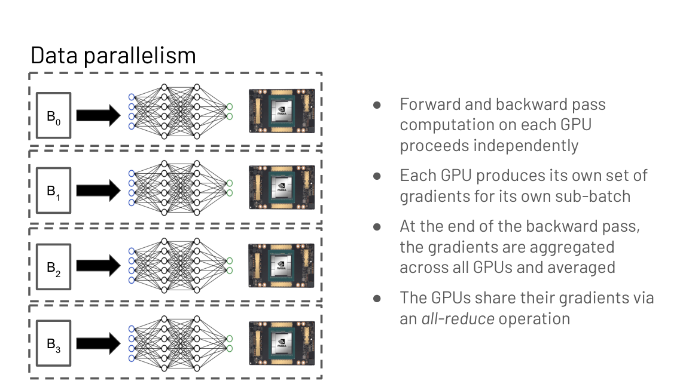
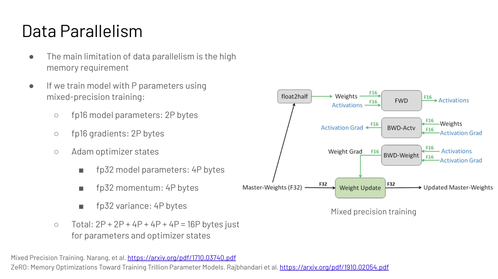
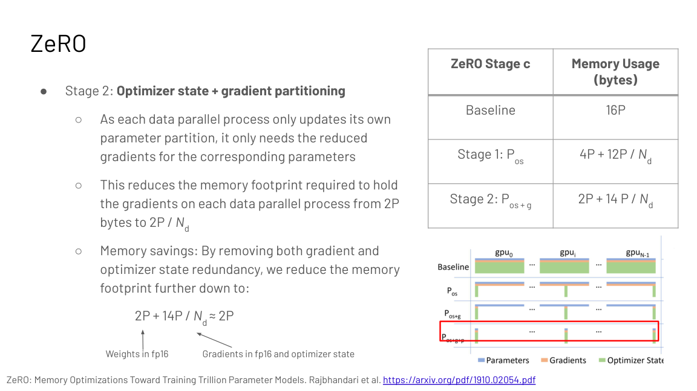
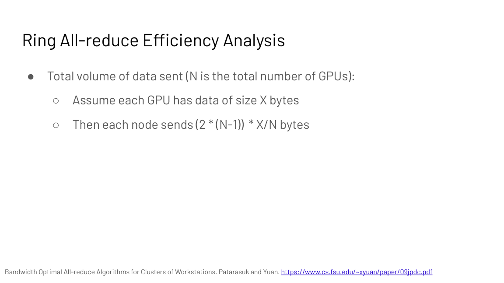
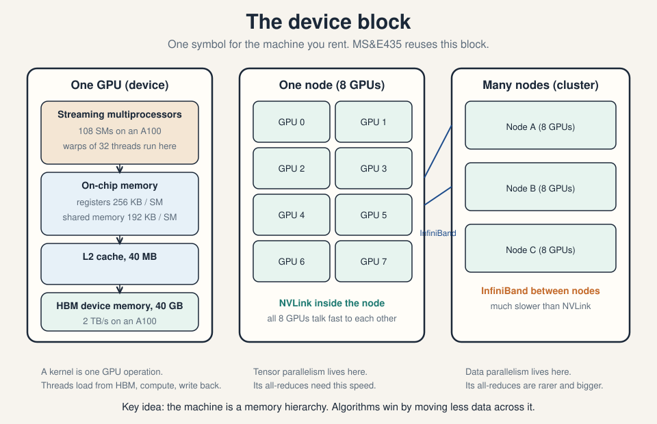
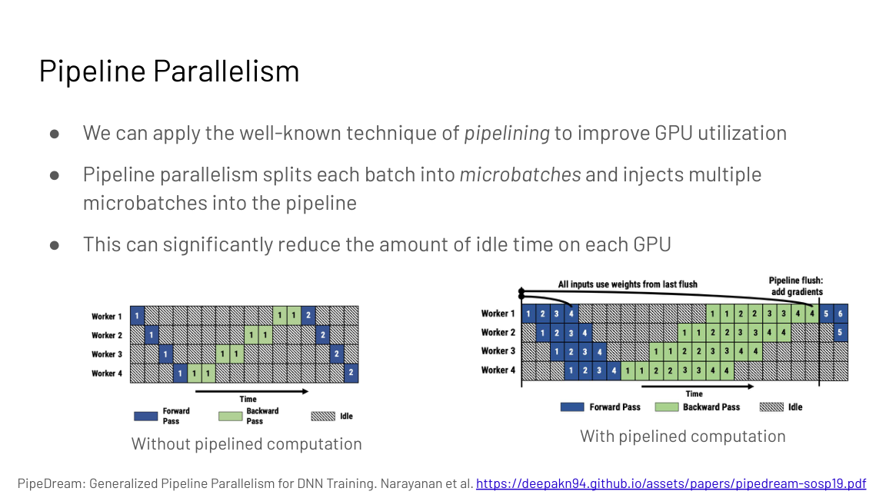
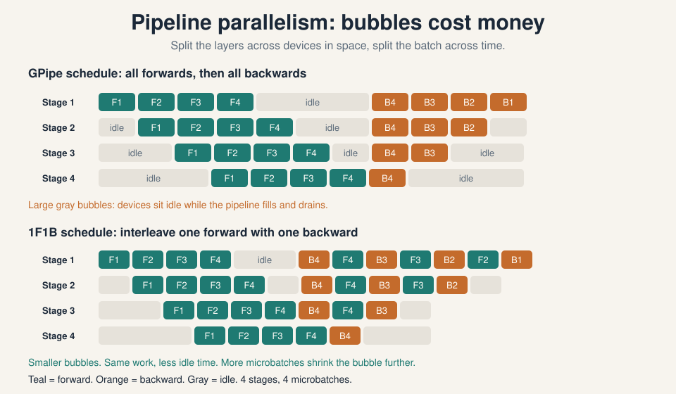
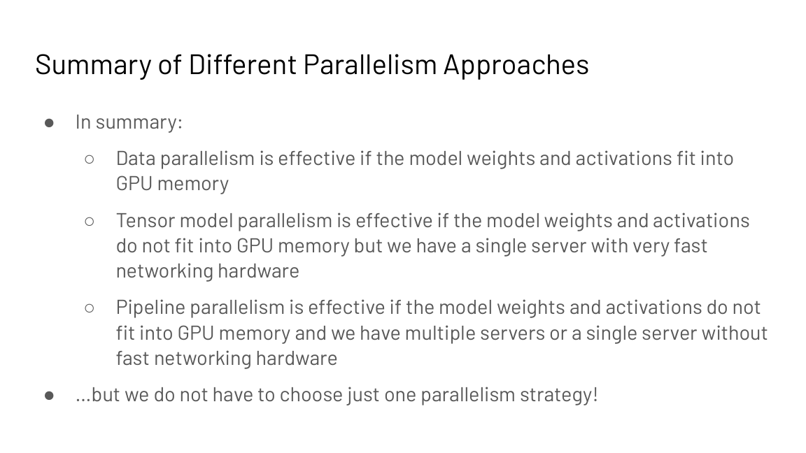

Lecture 10: Parallelism Fundamentals at Scale
Video blocked (ad-blocker or local file mode).
Watch on YouTubeVideo not loading? Watch on YouTube
Guest talk assigned with the parallelism lecture. Narayanan (NVIDIA Megatron-LM) covers data, tensor, and pipeline parallelism on real clusters. Timestamps link to the exact moments.
How to read this lesson
This is a bridge lesson. The deep mechanics of each parallelism style live in CS336 L07 and CS336 L08: collectives, topology, and the torch.distributed model. This lecture gives the CS229S framing: the memory math that forces distribution, the three-way decision table, and Deepak Narayanan’s practitioner view from the NVIDIA Megatron-LM team. Follow the links for depth; read here for decisions.
Level 1: Why parallelism is mandatory
Two curves collide. GPU FLOPS double roughly every 2.5 years, but LLMs grow about 10x bigger every year (Epoch AI; Megatron-Turing NLG 530B). A single device cannot hold the weights, the activations, the gradients, and the optimizer state, and even when it can, one device is too slow.
| Curve | Rate | Source |
|---|---|---|
| GPU FLOPS | 2x every ~2.5 years | Epoch AI price-performance |
| LLM size | ~10x every year | Megatron-Turing NLG 530B era |
Two challenges then dominate distributed design: minimize communication overhead (time sending data between GPUs) and minimize synchronization overhead (dependencies that stop GPUs from working independently). Everything below is a tradeoff between these two.
Level 1: Two axes, three techniques
Computation partitions along two axes: the input data or the model parameters.

- Data parallelism. Partition the input data, replicate the model weights. Four GPUs and batch 64: each GPU takes 16 examples. Forward and backward run independently per GPU; at the end, gradients are averaged across GPUs with an all-reduce.
- Model (tensor) parallelism. Partition the model weights, replicate the input data. Two flavors: vertical slicing (layers per GPU) and horizontal sharding (split within an operation).
- Pipeline parallelism. Partition the weights across space (stages hold layer groups) and the data across time (the batch splits into microbatches flowing through stages).
The three compose: data plus tensor plus pipeline (PTD or 3D parallelism) scales to thousands of GPUs. Narayanan’s talk walks the combinations on real clusters 06:26 ⏱06:26.
Level 1: Data parallelism and its memory wall
Pros: the most direct throughput lever (global batch grows per GPU), and easy to implement (PyTorch native support).
Cons: the model, activations, gradients, and optimizer state must fit on one GPU, and every weight synchronizes every step. GPT-3 cannot run on pure data parallelism on an 80 GB GPU.
The memory math, for P parameters in mixed precision:

- fp16 parameters: 2P bytes
- fp16 gradients: 2P bytes
- Adam state: fp32 parameters 4P, momentum 4P, variance 4P
- Total: 16P bytes before activations
ZeRO (Zero Redundancy Optimizer) removes the redundancy: data parallelism replicates all of this on every GPU, but each GPU only needs its share.

| Stage | Partitions | Memory per GPU |
|---|---|---|
| Baseline | none | 16P |
| 1 | optimizer state | 4P + 12P/Nd |
| 2 | + gradients | 2P + 14P/Nd (about 2P) |
| 3 | + parameters | 16P/Nd |
Stage 3 fetches (all-gathers) parameters as needed for forward and backward, trading about 1.5x more communication for memory proportional to 1/Nd. PyTorch FSDP (Fully Sharded Data Parallel) implements ZeRO-style sharding as a module wrapper: wrap the model, and sharding, gathering, and reduction happen underneath.
Baseline: 2P for fp16 params, 2P for fp16 grads, and 12P for fp32 params, momentum, and variance: 16P total, or 160 GB for 10B params. That fits on no single GPU. ZeRO stage 3 partitions parameters, gradients, and optimizer state across Nd data-parallel GPUs, cutting per-GPU memory to 16P/Nd at the cost of about 1.5x more communication for parameter gathering. Because the extra all-gathers cost bandwidth and can expose communication on the critical path. If the model fits with stage 1 or 2, the lower stages communicate less. Match the stage to the memory gap, not the maximum.
Level 1: All-reduce, the workhorse collective
Data parallelism averages gradients with an all-reduce: every GPU ends up with the sum (then the mean) of all GPUs’ gradients. The ring all-reduce runs in 2(N-1) iterations for N GPUs. Each GPU splits its data into N fragments and, per iteration, sends fragments to peers: the first N-1 iterations accumulate received values, the next N-1 propagate the completed sums.

Efficiency: each node sends 2(N-1) x X/N bytes for data of size X, so communication time is 2(N-1)X / (N x B) at bandwidth B. As N grows, per-node traffic approaches 2X: independent of GPU count. That is why the ring is bandwidth-optimal and why data parallelism scales to many nodes.
Level 1: Tensor parallelism and where it lives
Vertical slicing (layers per GPU) idles devices: each GPU waits for the previous stage’s activations. Horizontal slicing shards within the operation: for transformers, the Megatron style shards the self-attention and MLP weights across GPUs, with an all-reduce after every attention and MLP block to resynchronize.
Pros: per-GPU memory falls; utilization stays high. Cons: the all-reduces are extremely frequent, so throughput demands very fast interconnects; and the synchronization ops must be added manually to the attention module.
Narayanan’s rule from the talk: tensor parallelism is unwieldy across nodes 14:48 ⏱14:48. Within a server, 8 GPUs connect over NVLink at very high bandwidth; across servers, even InfiniBand is much slower 14:52 ⏱14:52. So tensor parallelism lives inside the node, and its communication never crosses the slow links. The device block from L05 is the map; this is the route.

Level 1: Pipeline parallelism and the bubble
Revisit vertical slicing, but fix the idleness with pipelining: split each batch into microbatches and inject several into the pipeline at once. While stage 2 processes microbatch 1, stage 1 processes microbatch 2. Idle time shrinks.

Two tuning knobs. Microbatch size: larger means higher arithmetic intensity but bigger pipeline bubbles; smaller means smaller bubbles but less efficient math. Schedule: which microbatch runs where and when. GPipe runs all forwards then all backwards; 1F1B (one forward, one backward) interleaves them and shrinks the bubble and the activation memory.

Narayanan’s talk shows an interleaved variant: device 1 holds layers 1 and 5, device 2 holds 2 and 6, and so on, so each device does two phases of forward passes per microbatch 24:07 ⏱24:07. More stages per device means less idle time at the cost of more point-to-point messages. TeraPipe extends the idea to the sequence dimension: split the sequence itself into subsequences processed incrementally per stage.
Pros: per-GPU memory falls; communication is point-to-point sends, not all-reduces. Cons: bubbles never fully vanish; scheduling microbatches concurrently is genuinely hard to implement.
Level 1: The decision table

| Situation | Choice |
|---|---|
| Weights and activations fit on one GPU | Data parallelism |
| They do not fit, but one fast node is available | Tensor parallelism (NVLink) |
| They do not fit, many nodes or slow interconnect | Pipeline parallelism |
In practice, combine: PTD (pipeline, tensor, data) parallelism trains thousand-GPU models (DeepSpeed, Megatron-LM). The strategy space grows combinatorially and experiments at scale are slow and expensive, so Alpa (Zheng et al., OSDI 2022) automates the search: it treats inter-operator parallelism (pipeline) and intra-operator parallelism (data, tensor) separately and picks the optimal combination for a given model and cluster.
Use all three. Tensor parallelism within each node (up to 8 ways) for the frequent attention and MLP all-reduces over NVLink. Pipeline parallelism across nodes for the layer stages, with microbatches sized to keep bubbles small. Data parallelism across the remaining replicas for throughput, with ZeRO stage 1 or 2 to fit optimizer state. This is PTD parallelism: each style lives where the network makes it cheap. Throughput collapses. Tensor parallelism all-reduces after every attention and MLP block, and InfiniBand is much slower than NVLink. The GPUs would stall on communication constantly. Narayanan’s talk makes this the cardinal rule: keep tensor parallelism inside the node.
Recap: the whole lesson on one screen
Data parallel: split the batch, copy the model. Tensor/model parallel: split the model, copy the data. Pipeline: split layers in space, batches in time.
Key: two axes, three techniques
2P params, 2P grads, 12P Adam state in mixed precision. That is why single-GPU training dies long before inference does.
Key: 16P before activations
Stage 1: optimizer state. Stage 2: plus gradients. Stage 3: plus parameters, down to 16P/Nd for 1.5x communication. FSDP wraps it.
Key: 16P to 16P/Nd
2(N-1) iterations; per-node traffic approaches 2X regardless of GPU count. The collective data parallelism stands on.
Key: 2(N-1)X/(NB) seconds
Shard attention and MLP weights Megatron-style; all-reduce after each block. Needs NVLink speed: never span nodes with it.
Key: inside NVLink only
Stages hold layer groups; microbatches flow through. 1F1B and interleaved schedules shrink the bubble. Only point-to-point messages.
Key: microbatches fill bubbles
Fits: data parallel. One fast node: tensor. Many nodes or slow net: pipeline. Combine all three (PTD) at thousand-GPU scale.
Key: topology decides
The strategy space is combinatorial and experiments are expensive. Alpa searches inter- and intra-operator parallelism for your model and cluster.
Key: Zheng et al., OSDI 2022
Official sources and further reading
Official: - Parallelism Fundamentals slide deck (Fall 2023 headers). - Deepak Narayanan talk (YouTube, JA1l96tjrs4): the practitioner view. - Course text narayanan-parallelism.txt: talk notes.
Further reading: - Rajbhandari et al., “ZeRO” (2019). - Shoeybi et al., “Megatron-LM” (2019). - Narayanan et al., “PipeDream” (SOSP 2019) and “Memory-Efficient Pipeline Parallelism” (2021). - Zheng et al., “Alpa” (OSDI 2022). - CS336 L07 and CS336 L08: the deep mechanics.
Caveats from these sources. The “10x per year” model growth and “2.5 year” GPU doubling are trend estimates from the slides, not laws. The 16P figure excludes activations, which vary with sequence length and checkpointing. The 1.5x stage-3 communication factor is from the ZeRO paper’s analysis. Talk timestamps point to the auto-captioned YouTube video; wording is the speaker’s paraphrase.
Connections to the other courses
- CS336 L07/L08: data, tensor, pipeline, and 4D/5D parallelism derived in full.
- CS229S L05: the device block: the map these strategies route over.
- CS229S L03: communication versus computation: the same bottleneck lens at cluster scale.
- CS229S L08: FSDP/ZeRO as the distributed answer to fine-tuning memory cost.
Parallelism cheatsheet. Why: models 10x/yr, GPUs 2x/2.5yr. Minimize communication + synchronization overhead. Data: split batch, replicate weights, all-reduce grads. Tensor: split weights (Megatron: shard attn+MLP, all-reduce per block), replicate data. Pipeline: stages hold layers, microbatches flow; 1F1B and interleaved cut bubbles. Memory: 16P bytes mixed-precision Adam (2P+2P+12P). ZeRO: S1 4P+12P/Nd, S2 2P+14P/Nd, S3 16P/Nd (1.5x comm). FSDP = ZeRO as API. Ring all-reduce: 2(N-1) iters, 2(N-1)X/(NB) s, bandwidth-optimal. Tensor inside node (NVLink); data/pipeline across (InfiniBand). Decision: fits->data; one fast node->tensor; many nodes->pipeline. PTD combines; Alpa automates.
Parallelism in one line. Split what does not fit, copy what is cheap to sync, and keep the chattiest pattern on the fastest wires.
Sources
- VIDEODeepak Narayanan parallelism talk (YouTube)
- SLIDESParallelism Fundamentals slide deck (Fall 2023 headers)
- PAPERRajbhandari et al., ZeRO: Memory Optimizations Toward Training Trillion Parameter Models (2019)
- PAPERShoeybi et al., Megatron-LM (2019)
- PAPERNarayanan et al., PipeDream (SOSP 2019)
- PAPERZheng et al., Alpa: Automating Inter- and Intra-Operator Parallelism (OSDI 2022)
- SUPPLEMENTCourse text: narayanan-parallelism.txt (talk notes)